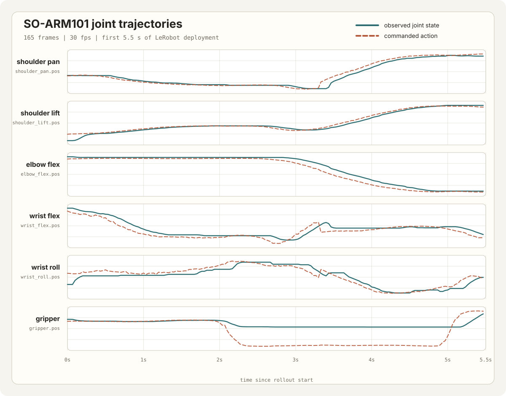

Project · Independent
SO-ARM101 Robot Learning
Real-world imitation learning · Diffusion policies · Isaac Lab sim-to-real · Nano World Model evaluation
This SO-ARM101 project combines real-world imitation learning with ACT, VLA, SmolVLA, and diffusion-model policies, Isaac Lab simulation for teacher/student policy learning, and world-model experiments for adapting predictive video models to my robot setup.
Real-World Imitation Learning
I trained and tested ACT-style policies, diffusion-model imitation policies, VLA models, and SmolVLA variants on real SO-ARM101 manipulation data. A large part of the work was practical experimentation: changing objects, testing how policies behaved under slightly different setups, and repeatedly seeing how much teleoperation quality, camera placement, lighting, object visibility, and demonstration consistency affected the resulting behavior.
The deployment media below uses the same first 5.5 seconds of a LeRobot smoke run at 30 fps. It records synchronized top and wrist camera streams, commanded actions, and observed robot joint state for the six SO-ARM101 position channels.

Isaac Lab Sim-To-Real
In parallel, I built an Isaac Lab pick-and-place pipeline from scratch. The simulation track uses a privileged-state teacher policy and distills it into a student visuomotor policy that must act from camera observations instead of privileged simulator state.
The current focus is sim-to-real transfer: making the simulated task, observation stack, control interface, and student policy robust enough to move from Isaac Lab to the physical SO-ARM101 setup. The video below is shown at half-speed playback.
Nano World Model Tests
I also tested Nano World Model on SO-ARM101 data. I started from the SO-101 datasets released with MolmoACT, manually went through the available multi-view datasets, and sorted them into categories by viewpoint and setup similarity.
For the first adaptation pass, I selected datasets with a top-view camera setup close to mine and trained from the RT-1 checkpoint toward SO-101 behavior. I then fine-tuned on my own collected datasets to make the model match my specific camera placement, robot, lighting, and workspace.